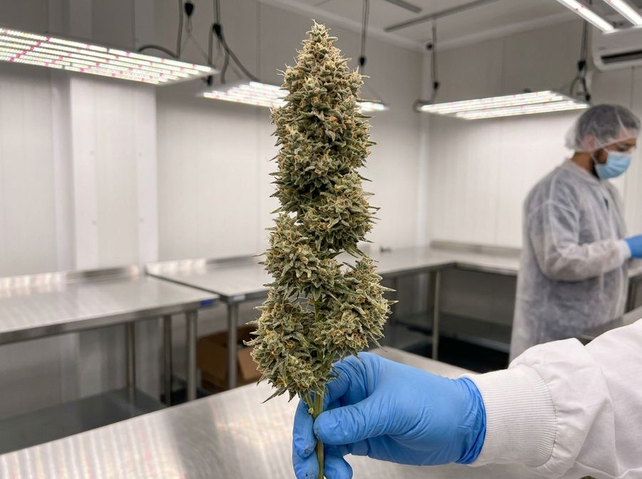
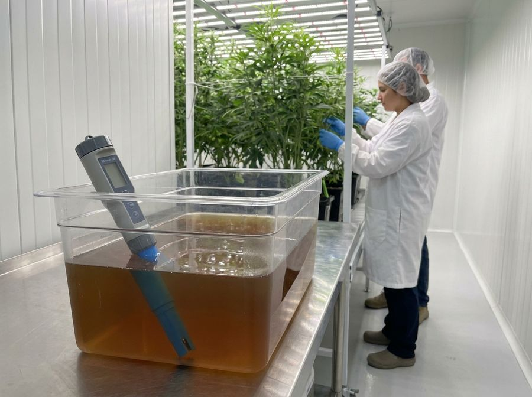
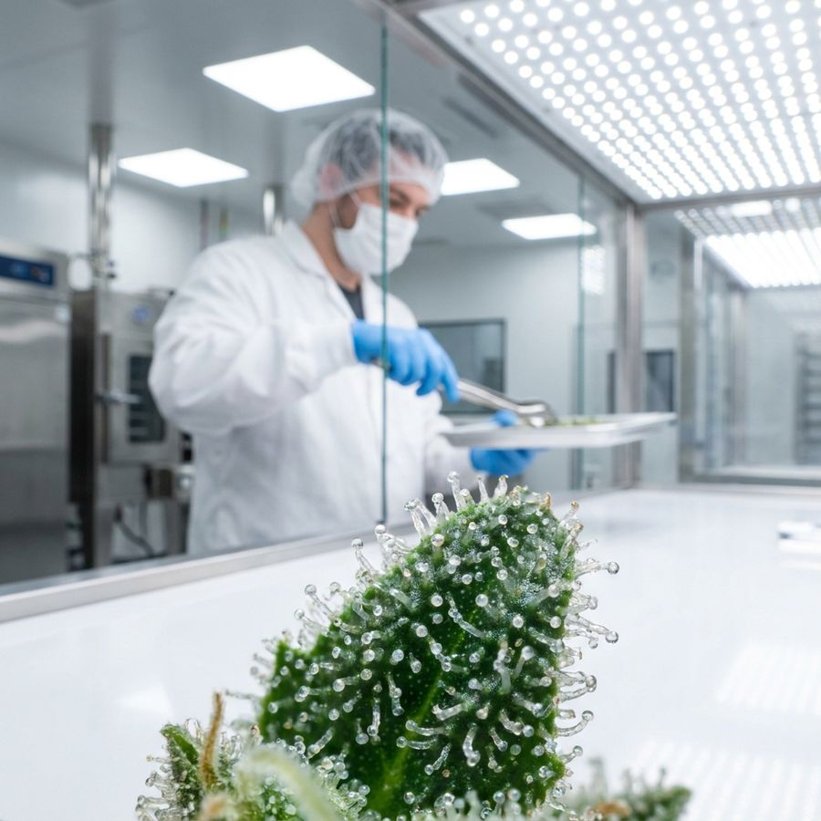
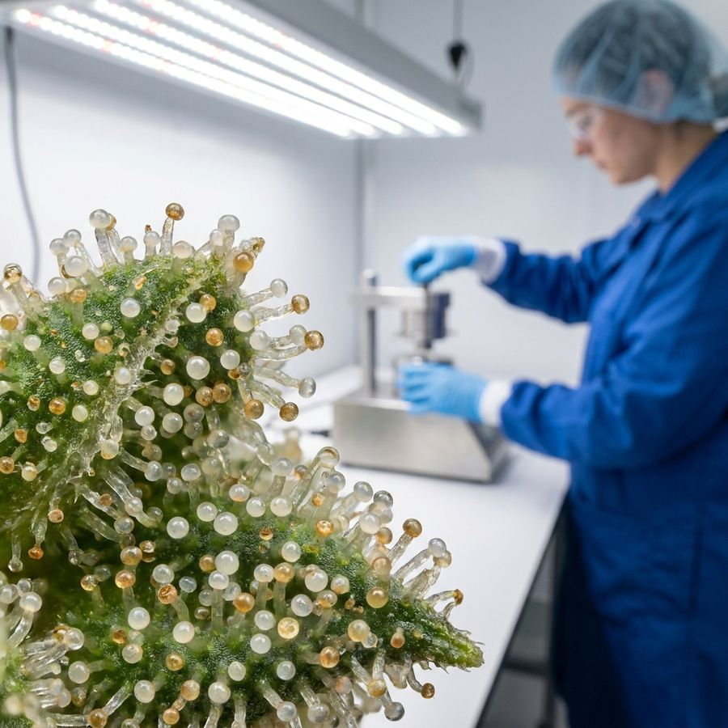

The flower cycle, week by week
A beginner's guide to the cannabis flowering stage: the flip to 12/12, the stretch, bud set, bulking, ripening, and reading the plant to know exactly when to cut.
What this is and who it's for
Cannabis grows in two big phases: vegetative (building leaves, stems and roots) and flowering (building the buds you actually harvest). Flowering is triggered by changing the lights to 12 hours on and 12 hours off, and it runs for roughly 8 to 10 weeks for most plants. This guide walks that stretch one week at a time.
You do not need to have grown before to use it. Flowering is the final phase, lasting about 8 to 10 weeks for typical hybrids. Pure indica types can finish in 7 to 8 weeks, and long sativa types can take 11 to 13.[6]
Only photoperiod plants need the light change to flower. Autoflower plants flower on their own with age, so this guide focuses on photoperiod plants. The plant tells you what week it is in, so you read the plant (pistils, trichomes, leaves) rather than the calendar alone. Getting the climate, light and feed right each week is the difference between dense, potent buds and loose, mouldy, or harsh ones.
Anyone about to flip their first photoperiod grow who wants a week-by-week map. Pairs with the crop-steering and harvest and cure papers.
Every term you need, defined
This page uses a handful of grower words repeatedly. Learn these six and the rest of the guide reads easily. None of them are complicated once defined.


The flip: why 12/12 starts flowering
Photoperiod cannabis measures the length of the dark period to decide whether it is spring (grow) or autumn (reproduce). When you give it 12 hours of uninterrupted darkness, it reads that as the days shortening and switches into flower production.[2]
The darkness must be truly dark. Uninterrupted darkness is required to trigger and maintain flowering, and even small light leaks during the 12-hour night can stress the plant back toward veg or cause it to make seeds (hermaphroditism).[4] In vitro work shows photoperiod plants will revert when night length is broken.[8]
Twelve hours is the safe default, though research finds slightly longer nights can also work for some cultivars.[1] Most strains show their first pre-flower pistils within 7 to 14 days of the flip. Flip the plant when it is healthy and roughly half to two-thirds of your final desired height, because it will stretch a lot after the flip.
Stray light from chargers, timer LEDs, or door gaps during lights-off can cause re-vegging or hermaphroditism. Tape over indicator lights and seal the room before you flip.
The stretch and bud set (weeks 1-4)
For the first 2 to 3 weeks after the flip the plant stretches, often nearly doubling in height as it builds the frame to hang buds on, while white pistils appear at the nodes.[6]
Around weeks 3 to 4 the stretch stops and those pistil sites organise into real budlets as calyxes begin stacking. This is the most sensitive window: every bud's final position is being set, so heavy leaf removal here costs you yield. In weeks 1 to 2 plants can gain 50 to 100% in height, so keep PPFD around 800 to 900 umol/m2/s and feed at a moderate EC (drip EC around 2.0 to 2.6) as growth is fast.[3]
| Week | Phase | PPFD (umol/m2/s) | Day / night temp | RH | VPD (kPa) | Drip EC | Action |
|---|---|---|---|---|---|---|---|
| 1 | Stretch | 800-850 | 26-28 C / 22-24 C | 65-70% | 0.9-1.0 | 2.0-2.2 | Lollipop, light defoliation |
| 2 | Stretch | 850-900 | 26-28 C / 22-24 C | 62-68% | 1.0-1.1 | 2.2-2.4 | Main defoliation |
| 3 | Bud set | 900 | 26-28 C / 21-23 C | 60-65% | 1.0-1.1 | 2.4-2.6 | Last light defoliation, then stop |
| 4 | Bud set | 900 | 26-28 C / 21-23 C | 58-62% | 1.1-1.2 | 2.4-2.6 | Hold steady, no more leaf removal |
Lollipop and do your main defoliation between roughly day 7 and the end of week 3, before bud sites lock in. Do not defoliate heavily after week 3. See the defoliation and training paper for technique.
Bulking and ripening (weeks 5-10)
Weeks 5 to 7 are peak bulking: buds swell fastest, frost (trichomes) builds, and aroma intensifies, so this is when light, feed and CO2 pay off most.[5]
From roughly week 7 onward the plant ripens: pistils darken from white to orange, trichomes shift clear to milky, and lower fan leaves yellow as the plant pulls stored nutrients into the buds. You push hardest during bulking, then ease off and lower humidity into ripening to protect the harvest. During bulking, push PPFD to about 900 to 1100 umol/m2/s (1200 to 1500 with CO2 enrichment at 1000 to 1200 ppm) and raise feed to peak EC.[3]
Bulking climate runs around 26 to 28 C day, with RH down to about 55 to 62% to limit mould risk as buds densify, and VPD around 1.1 to 1.3 kPa. In ripening (week 8 and on), drop RH to 40 to 50%, keep temps moderate in the low-to-mid 20s C, and many growers lower or flush nutrients in the last 1 to 2 weeks. Yellowing lower leaves late in flower is normal nutrient remobilisation, not always a deficiency to chase.
Reading the plant: when to harvest
Pistils are a rough early signal but they lie. Trichomes are the true clock, and you read them with a cheap jeweler's loupe or pocket microscope.[5]
Harvest when most trichomes have turned from clear to milky or cloudy, with a small fraction going amber. A common target is 80 to 90% milky with 5 to 15% amber. More clear or milky gives a more energetic, heady effect. More amber means THC is degrading toward CBN for a heavier, more sedative effect.[5]
Wait until pistils are mostly darkened and curled in (roughly 70% or more), then switch to checking trichomes for the real call. Use 60x or higher magnification on actual bud, not sugar leaves, and check several spots, since maturity varies across the plant. Do not harvest on the calendar alone: a week 9 strain can need week 10 depending on conditions and phenotype.
| Signal | What you see | Readiness | Effect if cut now |
|---|---|---|---|
| Pistils | Still mostly white, sticking out | Too early | Thin, harsh, low potency |
| Trichomes | Mostly clear | Too early | Underdeveloped |
| Trichomes | 80-90% milky, 5% amber | Peak window (early) | Energetic, heady |
| Trichomes | Milky with 10-15% amber | Peak window (late) | Balanced |
| Trichomes | 30%+ amber, leaves yellow | Over-ripe | Sedative, couch-lock |


Common beginner mistakes
Most first-grow failures in flower come from a few repeatable errors: light leaks, over-defoliating, chasing the calendar instead of the trichomes, and letting humidity stay high as buds get dense. Each is easy to avoid once you know it. The single most expensive mistake is harvesting too early because you ran out of patience.
| Pitfall | The fix |
|---|---|
| Light leaks in the dark period | Tape over LED indicators and seal door gaps. Even a phone-screen of light, repeated, can cause hermies |
| Over-defoliating or doing it late | Stop heavy leaf removal after week 3. Leaves are the plant's sugar factory during bulking |
| Humidity too high in late flower | Pull RH down to 40-50% from week 7. Dense buds plus 60%+ RH invites bud rot (botrytis) |
| Nutrient burn | Drop feed EC and give enough water volume per feed. Burnt tips mean the feed is too strong |
| Harvesting too early or by calendar | Let the trichomes decide. A few extra days to proper maturity beats hitting an exact week |
High humidity (60% and up) in dense late-flower canopies sharply increases bud rot risk. Botrytis starts inside the bud where you cannot see it, then collapses a whole cola. Keep air moving and humidity low through ripening.[7]
Realistic expectations and a sample timeline
A typical photoperiod indoor grow runs about 8 to 10 weeks of flower on top of veg time, and your first harvest will rarely be your best. Yield and quality climb as you learn to read the plant. Strain genetics set the outer limits, while your light, climate and feed decide how close you get to them. Breeder-stated flowering times are estimates, and the actual finish varies with conditions by a week or more in either direction.[6]
| Week | Phase | What the plant is doing | PPFD | Day/night | RH / VPD | Action |
|---|---|---|---|---|---|---|
| 1-2 | Stretch | Doubling in height, first pistils | 800-900 | 27 C / 23 C | 65% / 1.0 | Lollipop, defoliate |
| 3-4 | Bud set | Stretch ends, budlets form | 900 | 27 C / 22 C | 60% / 1.1 | Stop defoliating |
| 5-7 | Bulking | Buds swell fastest, frost builds | 1000-1100 | 27 C / 22 C | 58% / 1.2 | Peak feed, push light |
| 8-10 | Ripening | Pistils darken, trichomes go milky | 900 | 24 C / 20 C | 45% / 1.2 | Lower RH, flush, read trichomes |
- Conditions move the finish date. Genetics set the range, but your climate and feed decide where in it you land, often by a week or more.
- Keep simple notes. Week, height, climate, feed, what you removed. This is the fastest way to make each grow better than the last.
- The last weeks feel slow. Resist cutting early, because that is where a lot of weight and potency finalise.
Get the flip clean, ease humidity down as buds densify, and let the trichomes decide. From here, read the crop-steering paper to fine-tune feed and dryback, then the harvest, dry and cure paper to protect everything you just grew.
References
- Ahrens A, Llewellyn D, Zheng Y. Is Twelve Hours Really the Optimum Photoperiod for Promoting Flowering in Indoor-Grown Cultivars of Cannabis sativa? Plants. 2023;12(14):2605. https://doi.org/10.3390/plants12142605
- Spitzer-Rimon B, Duchin S, Bernstein N, Kamenetsky R. Architecture and Florogenesis in Female Cannabis sativa Plants. Front Plant Sci. 2019;10:350. https://doi.org/10.3389/fpls.2019.00350
- Llewellyn D, Golem S, Foley E, Dinka S, Jones AMP, Zheng Y. Indoor grown cannabis yield increased proportionally with light intensity, but ultraviolet radiation did not affect yield or cannabinoid content. Front Plant Sci. 2022;13:974018. https://doi.org/10.3389/fpls.2022.974018
- Eichhorn Bilodeau S, Wu B-S, Rufyikiri A-S, MacPherson S, Lefsrud M. An Update on Plant Photobiology and Implications for Cannabis Production. Front Plant Sci. 2019;10:296. https://doi.org/10.3389/fpls.2019.00296
- Livingston SJ, Quilichini TD, Booth JK, Wong DCJ, Rensing KH, Laflamme-Yonkman J, Castellarin SD, Bohlmann J, Page JE, Samuels AL. Cannabis glandular trichomes alter morphology and metabolite content during flower maturation. Plant J. 2020;101(1):37-56. https://doi.org/10.1111/tpj.14516
- Hesami M, Pepe M, Jones AMP. Morphological Characterization of Cannabis sativa L. Throughout Its Complete Life Cycle. Plants. 2023;12(20):3646. https://doi.org/10.3390/plants12203646
- Mahmoud M, BenRejeb I, Punja ZK, Buirs L, Jabaji S. Understanding bud rot development, caused by Botrytis cinerea, on cannabis (Cannabis sativa L.) plants grown under greenhouse conditions. Botany. 2023;101(4):200-231. https://doi.org/10.1139/cjb-2022-0139
- Moher M, Jones M, Zheng Y. Photoperiodic Response of In Vitro Cannabis sativa Plants. HortScience. 2021;56(1):108-113. https://doi.org/10.21273/HORTSCI15452-20
Citations marked in-text as [n] map to this list. Peer-reviewed sources except where noted. Cannabis tissue culture is strongly genotype-dependent, verify dilutions, hormone doses and local regulations against the primary sources before relying on them.